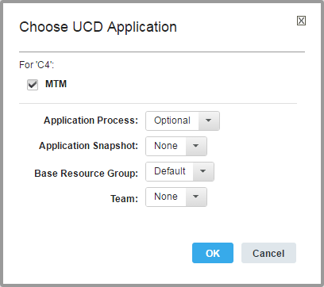

Deploying applications with blueprints
Add all of the components in an application to a blueprint so that when you provision environments from the blueprint, the engine automatically installs the application.
- On the HCL® UrbanCode™ Deploy server, create an application, add components to it, and create an application process that deploys the components. See Application processes.
- Create a blueprint for the target cloud, including adding virtual images:
- Modeling environments for SoftLayer
- Modeling environments for Amazon Web Services
- Modeling environments for VMware vCenter
- Modeling environments for VMware vRealize Automation
- Modeling environments for OpenStack and OpenStack-based clouds
- Modeling environments for Microsoft Azure.
- Modeling environments for Google Cloud Platform
You can use the blueprint designer to model environments for your applications. You use an existing application process to deploy the components that it contains. Then, you can provision the environment from the blueprint designer. Each time you provision the blueprint, you create a new HCL UrbanCode Deploy environment for the application. You also create agents on images that contain HCL UrbanCode Deploy that deploy the components.
You can also use the blueprint designer to create new application processes to deploy components in an application. See Deploying components with blueprints.
-
Log in to the blueprint designer as a user who has the permissions to create and edit blueprints and to access components.
Note: The components that you can see in the blueprint editor depend on your permissions. If your blueprint design server account is connected to an account on the HCL UrbanCode Deploy server, you see the components that you have access to on that server. If your blueprint design server account is not connected to an account on the HCL UrbanCode Deploy server, you see the components that are associated with the token or user account that is on the System Settings page.
-
Open the blueprint that you created for the target cloud.
-
Add components to the virtual images in the blueprint:
- From the palette, in the Component drawer, drag a component to a virtual image in the blueprint.
-
In the Choose Application window, specify the application, as in the following image. The window shows a check box for each application that the component currently belongs to.

Each additional component that you add to the blueprint must be part of the same application.
-
In the Application Process list, select an application process that deploys components.
- In the Application Snapshot list, select an application snapshot. Application snapshots define the specific versions of components and processes to use when an application process runs. See Snapshots.
- In the Base Resource Group list, select the resource group that contains the resources in the blueprint. If no resource groups are on the server, select Default to create a resource group.
- In the Team list, select the team to assign to the component or component tag.
- Click OK.
- If the application process deploys multiple components, add the other components that are deployed by the application process to images. All of the components that the application contains are listed at the top of the Components drawer. The names of the components that you must add to the blueprint are shown in red text. Until you add all the components that the application process deploys to the blueprint, the error icon
 is displayed.
is displayed. -
Specify the version of each component in either the diagram editor or the blueprint source code:
Note: If you selected an application snapshot, you do not define the component versions to provision.
- From the diagram editor, in the lower left of an image, click LATEST, which is the most recent component version. From the Choose Component Version dialog box, select the version of the component, and then click OK.
-
From the source code view, in the deployment instance resource, in the
versionproperty, specify the version of each component. For example, the following code specifies version 1.0 of theJPetStore-APPcomponent.JPetStore-APP: type: IBM::UrbanCode::SoftwareDeploy::UCD properties: apply_config: { get_resource: JPetStore-APP_sw_config } server: basic_compute_node **version: "1.0"** agent_timeout: "360"The component version name is in double quotation marks. To use the most recent version of a component, specify
"LATEST".
-
If the components contain component environment properties, specify values for those properties in the
inputsection of the IBM::UrbanCode::SoftwareConfig::UCD resource. Component environment properties are one of two types of properties that you can pass from a blueprint to the HCL UrbanCode Deploy in this way. For example, the following code shows component environment properties that are namedServerNameandIntegerValue:ComponentA_config: type: IBM::UrbanCode::SoftwareConfig::UCD properties: name: ComponentA component_process: deploy ucd_server_url: { get_param: ucd_server_url } ucd_username: { get_param: ucd_user } ucd_password: { get_param: ucd_password } application: { get_attr: [resource_tree, application_name] } inputs: ServerName : { get_param: Referenced_Image_server_name } IntegerValue : 25The engine passes these properties to the server at provisioning time. You can use these properties in processes. For example, to refer to the
ServerNameproperty in a component process, use this code:${p:environment/ServerName}. -
If the application process contains application process properties, specify values for those properties in the
inputsection of the IBM::UrbanCode::SoftwareConfig::UC resource. Application process properties are one of two types of properties that you can pass from a blueprint to the HCL UrbanCode Deploy in this way.Restriction: You can provide only string values for application process properties, and you must include the values in double quotation marks.
For example, the following code shows application process properties that are named
UsernameandPassword:application_request: type: IBM::UrbanCode::ApplicationProcess::UCD properties: ucd_server_url: { get_param: ucd_server_url } ucd_username: { get_param: ucd_user } ucd_password: { get_param: ucd_password } application_process: Deploy-application application: { get_attr: [resource_tree, application_name] } environment: { get_attr: [resource_tree, environment_name] } inputs: # application process properties ** Username : "user" Password : "password"**The engine passes these properties to the server at provisioning time.
-
If the component maps to a WebSphere® Application Server cell and you use the WebSphere Application Server - Deploy plug-in, add the
subgroupproperty to thepropertiessection and set thesubgroupproperty to the name of the cell. For example, the following code shows a subgroup property that is set toWebSphereCell:ComponentA_config: type: IBM::UrbanCode::SoftwareConfig::UCD properties: subgroup: WebSphereCellAfter the automatic discovery process runs, the component is nested in the resource tree under the WebSphere Application Server cell resource. To learn more about automatic discovery, see Importing resources from WebSphere Application Server.
-
If the image that contains your HCL UrbanCode Deploy components is attached to multiple networks, change the agent name. To ensure that you can access the agent, you can modify the blueprint to use this agent name pattern:
application\_name.environment\_name.image\_key. To customize the provisioned image name and the agent name, you can modify the image's key parameter value in the blueprint properties.-
In the
IBM::UrbanCode::SoftwareDeploy::UCDresource, add theagent_naming_schemeproperty.The resource resembles the following code:ComponentName: type: IBM::UrbanCode::SoftwareDeploy::UCD properties: apply_config: { get_resource: ComponentName_sw_config } server: server_key version: LATEST agent_timeout: "360" **agent\_naming\_scheme:** -
From the blueprint diagram, select the component.
- In the component properties, for Agent Naming Scheme, provide the following value: server-name.
- Select the image and modify the Key value.
- If you add multiple components to an image, repeat these steps for each component.
- To connect the agents on the virtual images to an agent relay, specify the URL of the agent relay in the ucd_relay_url parameter.
By default, the blueprint design server installs an agent on each virtual machine in the environment. By default, these agents connect directly to the server. If the server is behind a firewall, inside a VPN, or otherwise inaccessible, you must connect the agents to an agent relay.
For example, if the URL of the agent relay is
http://relay.example.com, the parameter looks like the following code:ucd_relay_url: type: string default: "http://relay.example.com" -
-
Save the blueprint.
You can deploy the application to your cloud by provisioning the blueprint. See Provisioning cloud environments.
Parent topic: Modeling environments for clouds through OpenStack Heat